어떤 분이세요?
본인 역할의 장만 읽어도 됩니다. 처음 도입하는 관리자는 위에서부터 차례로 읽어 주세요.
한눈에 보기
고객이 요청을 올리면 업체가 처리하고, 고객이 결과를 확인해야 완료됩니다. 요청 하나는 아래 순서로 상태가 바뀝니다.
| 상태 | 뜻 | 누가 바꾸나요? |
|---|---|---|
| 접수 | 고객이 요청을 올렸고 아직 처리를 시작하지 않았습니다. | 고객이 등록하면 자동 |
| 처리 중 | 업체가 확인하고 작업하고 있습니다. | 업체 관리자·엔지니어 |
| 확인 대기 | 업체가 처리를 끝냈고 고객의 확인을 기다립니다. | 업체 관리자·엔지니어 |
| 완료 | 고객이 결과를 확인했습니다. 더 이상 바꿀 수 없습니다. | 고객만 가능 |
| 취소 | 잘못 올린 요청 등으로 처리하지 않고 닫았습니다. | 업체 관리자·엔지니어 |
알림은 누구에게 가나요?
알림은 Doneline 화면 오른쪽 위 종 모양 아이콘에 숫자로 표시됩니다. 알림을 누르면 해당 요청 화면이 바로 열립니다. (메일·메신저로 보내는 알림은 아직 없습니다.)
업체 관리자처음 도입하기
가입부터 첫 고객 요청을 받기까지 약 10분이면 됩니다. 순서: 업체 가입 → 고객사·법인·부서 등록 → 직원 등록 → 고객 초대 → 가입 승인.
1업체 가입
로그인 화면 아래 무료로 시작하기를 누르고 업체 정보와 관리자 계정을 입력합니다. 가입하기를 누르면 바로 로그인됩니다.
-
업체 코드: 영문 소문자·숫자·하이픈(-) 2~40자. 대문자나 띄어쓰기는 자동으로
바뀝니다. 예)
hanbit-it - 비밀번호: 8자 이상. 다른 사이트와 다른 비밀번호를 쓰세요.
2시작하기 안내 따라가기
처음 로그인하면 해야 할 일 7단계가 나옵니다. 각 줄의 열기를 누르면 해당 화면이 열리고, 끝낸 단계에는 ✓ 표시가 붙습니다.
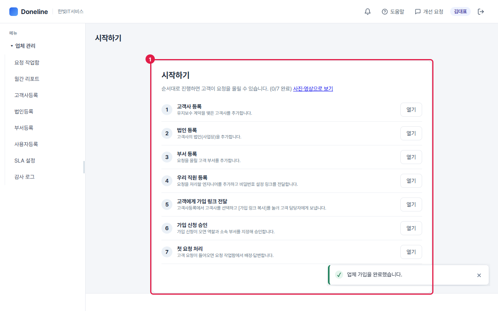
3고객사 · 법인 · 부서 등록
요청은 고객사 → 법인 → 부서 단위로 올라옵니다. 세 화면 모두 표(그리드)에 줄을 추가하고 저장하는 같은 방식입니다.
- 행추가를 누르면 빈 줄이 생깁니다.
- 칸을 두 번 클릭해 코드·이름을 입력하고 Enter를 누릅니다. 입력할 수 있는 칸은 옅은 바탕으로 표시됩니다.
- 오른쪽 위 파란 저장을 누릅니다. 체크된 줄만 저장됩니다.
법인등록은 왼쪽에서 고객사를, 부서등록은 고객사와 법인을 먼저 고른 뒤 같은 방법으로 추가합니다.
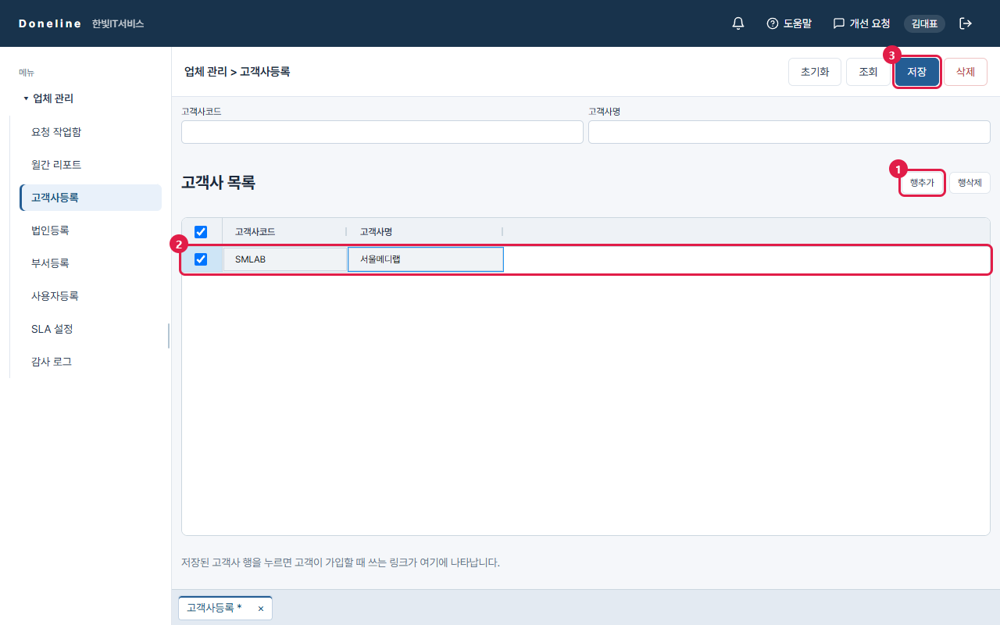
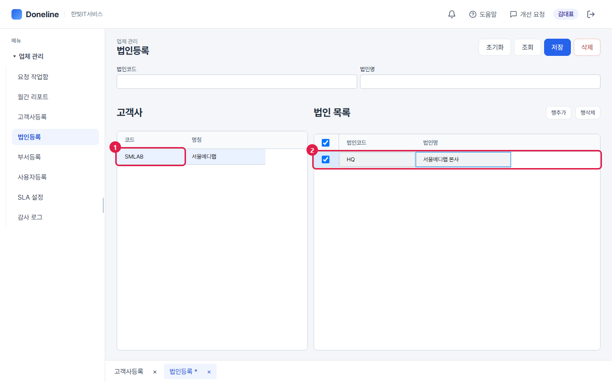
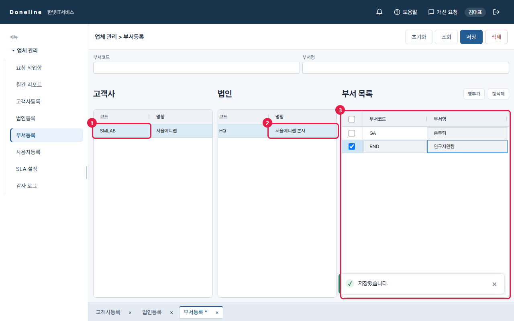
4우리 직원(엔지니어) 등록
사용자등록 화면에서 요청을 처리할 직원을 추가합니다.
- 고객사 칸에서 우리 업체 직원 (고객사 없음)을 고르고, 초기화 후 아이디·이름·연락처를 입력합니다. 역할은 업체 담당자(엔지니어) 또는 업체 관리자를 고릅니다. 저장을 누릅니다.
- 비밀번호 설정 링크가 나타납니다. 복사를 눌러 메신저·문자로 직원에게 보내 주세요. 링크는 24시간 유효합니다.
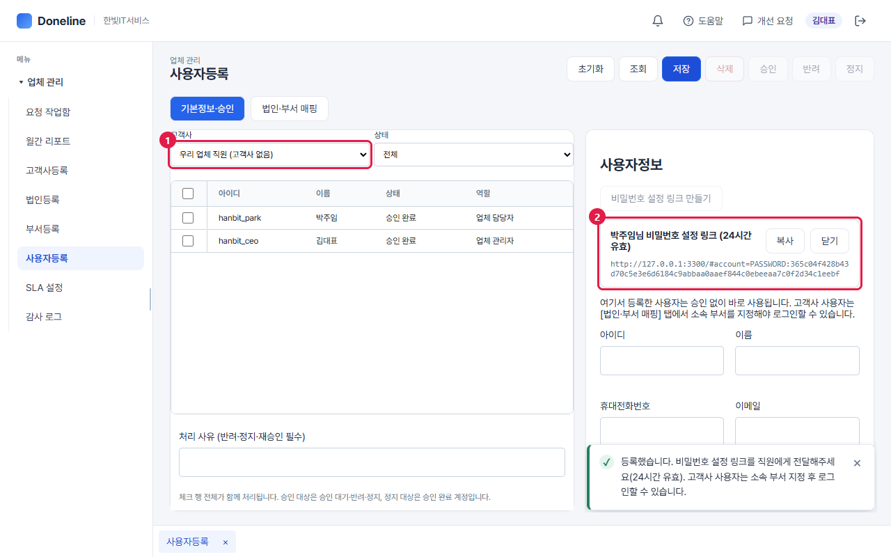
5고객에게 가입 링크 보내기
고객사등록에서 저장된 고객사 줄을 누르면 화면 아래에 그 고객사 전용 가입 링크가 나타납니다.
- 가입 링크 복사를 눌러 고객 담당자에게 보냅니다. 이 링크로 가입한 사람은 자동으로 이 고객사 소속이 됩니다.
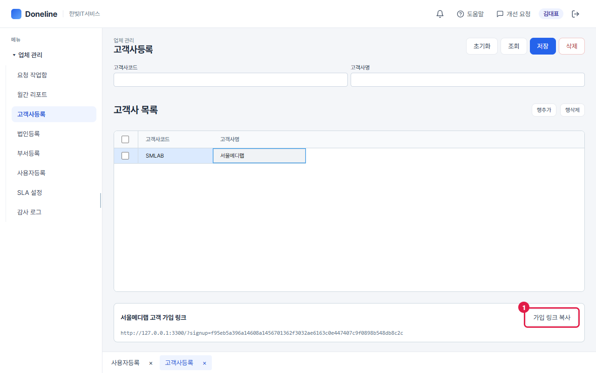
6가입 신청 승인
고객이 가입을 신청하면 종 아이콘에 알림이 옵니다. 승인과 소속 부서 지정을 한 번에 끝냅니다.
- 사용자등록에서 고객사를 고르고 조회합니다. 상태가 '승인 대기'인 사람이 보입니다.
- 그 줄의 체크칸을 누르고 오른쪽 위 승인을 누릅니다.
- 창에서 역할(고객사 사용자 / 고객사 관리자)과 소속 부서를 고르고 승인을 누르면 끝입니다. 고객은 바로 로그인할 수 있습니다.
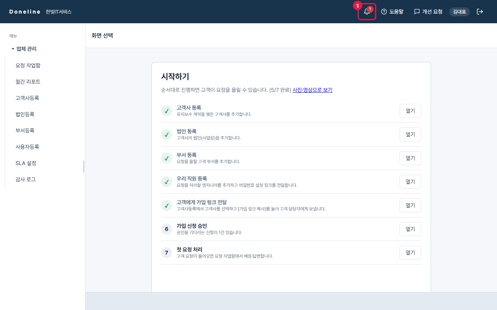
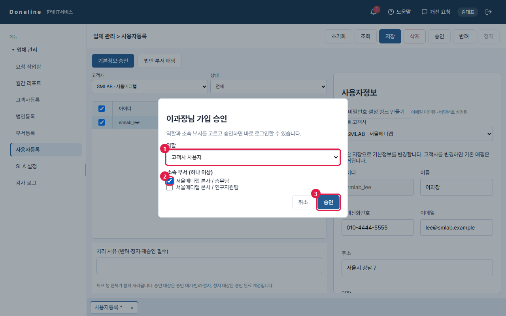
7처리 기한(SLA) 설정
긴급도(우선순위)별로 첫 응답 기한(등록 후 첫 답변까지)과 처리 기한(등록 후 처리 완료까지)을 시간 단위로 정합니다. 기본값이 들어 있어 바꾸지 않아도 됩니다.
기한이 지난 요청에는 목록에 빨간 기한 초과 표시가 붙고, 월간 리포트의 준수율에 반영됩니다.
- 기본값: 긴급 1·4시간 / 높음 4·24시간 / 보통 8·72시간 / 낮음 24·168시간 (첫 응답·처리)
- 기한은 주말을 포함한 시간으로 계산합니다.
- 바꾼 기한은 저장 후 새로 등록되는 요청부터 적용됩니다.
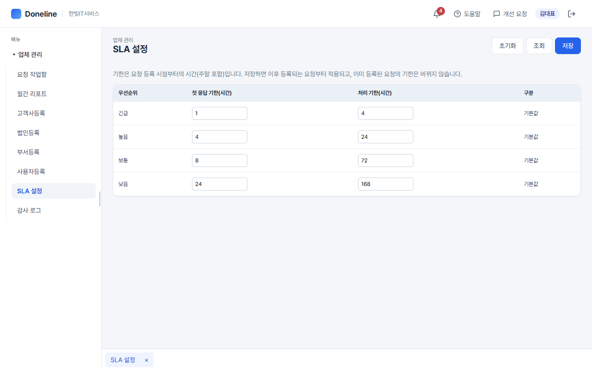
8월간 리포트
달과 고객사를 고르고 조회하면 고객사별 등록·처리 건수와 기한 준수율이 나옵니다. 고객 보고 자료로 쓰세요.
- 엑셀 다운로드는 요약과 요청 목록을 한 파일(시트 2개)로 내려받습니다.
- 처리 SLA 준수율: 처리 완료 건 중 기한 안에 끝낸 비율
- 첫 응답 SLA 준수율: 등록 건 중 첫 응답 기한 안에 답한 비율
- 평균 처리 시간: 등록부터 처리 완료까지 걸린 평균 시간
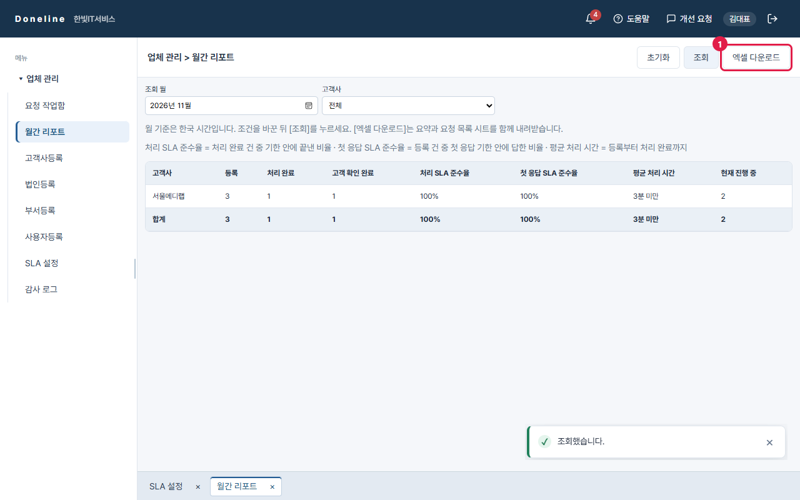
업체 엔지니어요청 처리하기
관리자에게 받은 링크로 비밀번호를 정하고, 알림이 오면 요청 작업함에서 처리합니다.
1비밀번호 설정 (처음 한 번)
관리자가 보내 준 링크를 엽니다. 화면 위에 내 이름과 업체 이름이 맞는지 확인하고, 새 비밀번호(8자 이상)를 두 번 입력한 뒤 완료를 누르면 바로 로그인됩니다.
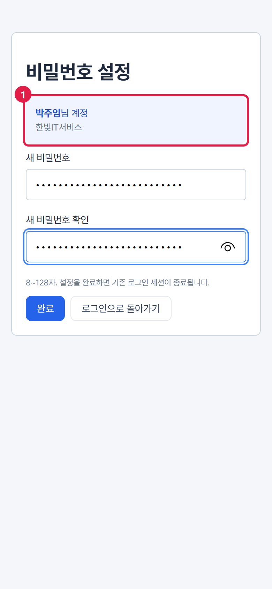
2새 요청 알림 확인
새 요청이 오면 오른쪽 위 종 아이콘에 숫자가 붙습니다. 눌러서 열고, 알림 한 줄을 누르면 그 요청이 바로 열립니다.
모두 읽음은 숫자만 지우고 요청 상태는 바꾸지 않습니다.
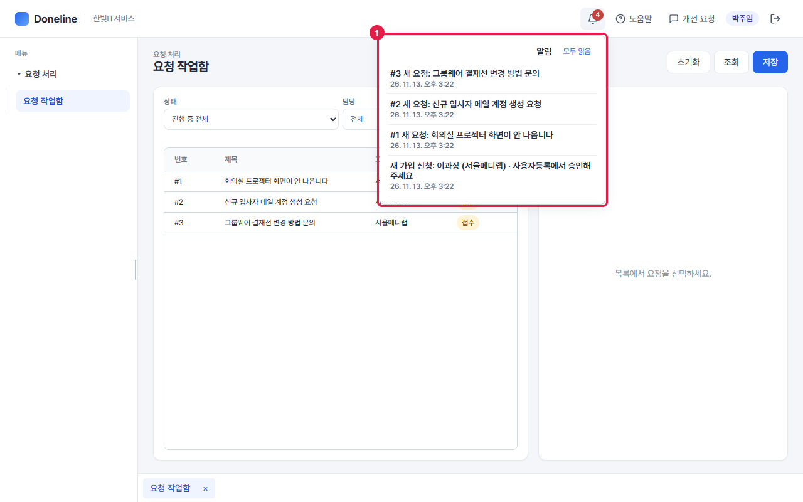
3요청 처리하기
요청 작업함 목록에서 요청을 누르면 오른쪽에 내용과 처리 칸이 나옵니다. 바꾼 뒤 오른쪽 위 저장을 누르면 고객에게 알림이 갑니다.
- 상태: 작업을 시작하면 '처리 중', 끝나면 '처리 완료 (고객 확인 대기)'로 바꿉니다. 최종 '완료'는 고객이 결과를 확인하면 자동으로 바뀝니다. 담당자가 없는 요청을 '처리 중'으로 바꾸면 내가 담당자가 됩니다.
- 담당자: 엔지니어는 담당자가 없는 요청을 '나'에게 가져올 수 있습니다. 다른 직원에게 배정하거나 바꾸는 것은 업체 관리자가 합니다. 지정된 사람에게 알림이 갑니다.
- 답변 / 메모: 고객에게 보일 답변을 씁니다. 내부 메모에 체크하면 고객에게 보이지 않고 알림도 가지 않습니다.
- 저장을 누릅니다. 처리 칸 바로 아래의 저장도 같은 동작입니다(변경한 내용이 있을 때만 눌립니다).
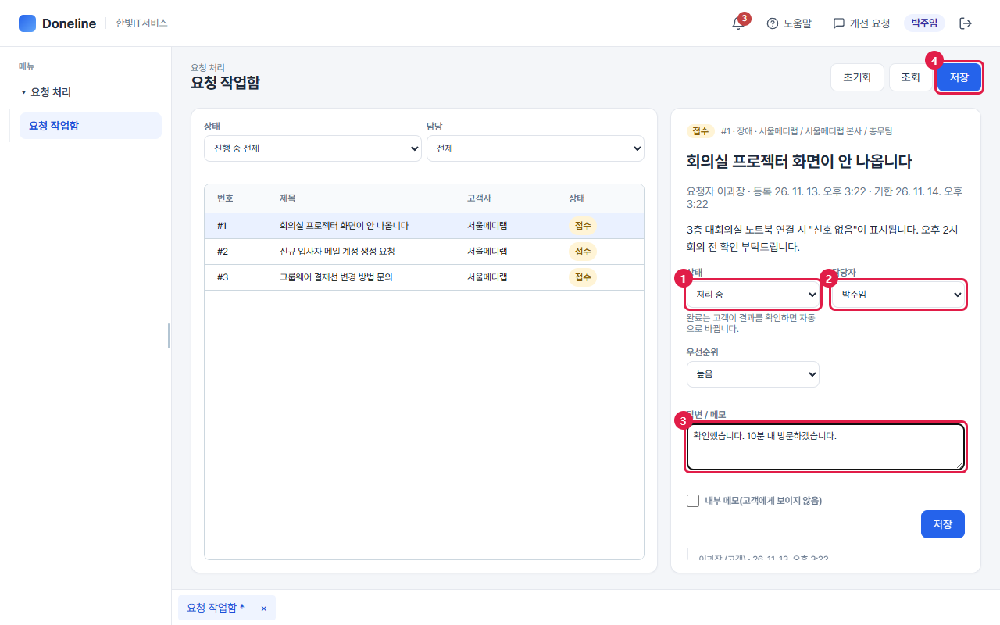
고객사 직원요청 올리고 확인하기
휴대폰으로도 똑같이 쓸 수 있습니다. 아래 사진은 휴대폰 화면입니다.
1회원가입
업체에서 받은 가입 링크를 엽니다. 위에 우리 회사 이름이 보이면 맞는 링크입니다.
- 회원가입을 누르고 아이디·이름·연락처·비밀번호(8자 이상)를 입력한 뒤 가입 신청을 누릅니다.
업체 관리자가 승인하면 로그인할 수 있습니다. 급하면 담당 업체에 승인을 요청하세요.
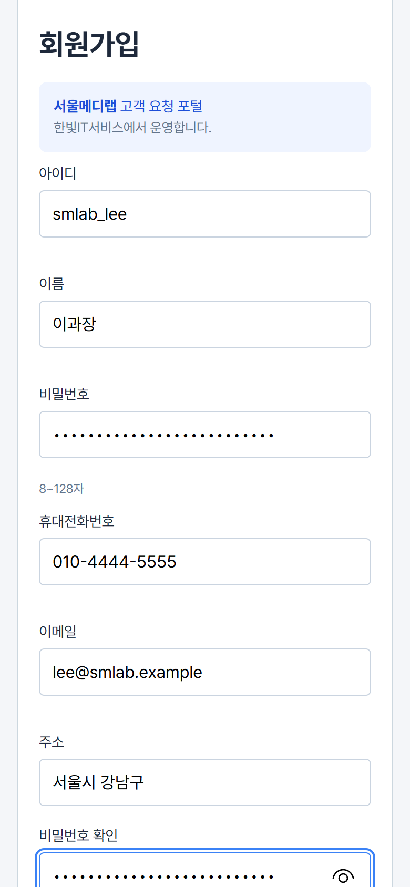
2요청 등록
로그인하면 고객 요청 화면이 바로 열립니다. + 새 요청을 누릅니다.
- 구분: 장애(고장·오류) / 작업 요청(계정 생성, 설치 등) / 문의
- 긴급도: 낮음·보통·높음·긴급. 긴급도에 따라 처리 기한이 정해집니다.
- 내용: 언제, 어디서, 무엇이 안 되는지 적어 주면 빨리 처리됩니다.
다 썼으면 아래 요청 등록을 누릅니다.
3진행 상황 보기
요청 카드의 색 표시로 상태를 알 수 있습니다(상태 설명). 담당자가 답변하거나 상태를 바꾸면 종 아이콘에 알림이 옵니다.
카드를 누르면 처리 이력이 나오고, 아래 댓글로 추가 내용을 남길 수 있습니다.
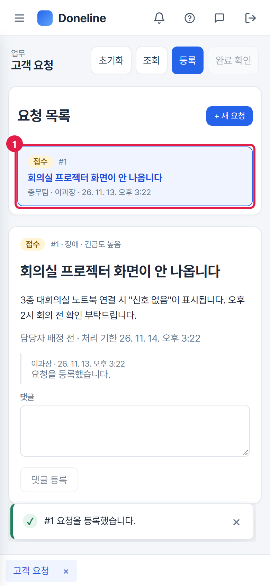
4완료 확인 · 재처리 요청
업체가 처리를 끝내면 상태가 확인 대기가 되고 보라색 안내가 나옵니다.
- 해결됐으면 완료 확인을 누릅니다. 아직 안 됐으면 아래 댓글 칸에 이유를 쓰고 재처리 요청을 누릅니다. 이유는 꼭 적어야 합니다.
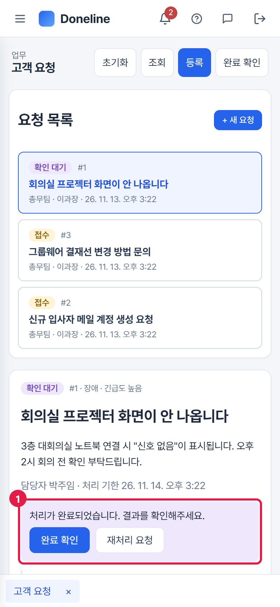
화면 구성과 버튼
| 위치 | 무엇인가요? |
|---|---|
| 왼쪽 메뉴 | 내 역할에서 쓸 수 있는 화면 목록입니다. 휴대폰에서는 왼쪽 위 ☰로 엽니다. |
| 오른쪽 위 | 종 아이콘(알림) · 개선 요청 · 내 이름 · 로그아웃(문 모양 아이콘) |
| 화면 위 버튼줄 | 초기화 입력·선택을 처음 상태로 / 조회 최신 내용 불러오기 / 파란 버튼 저장·등록 같은 주요 동작 / 빨간 테두리 삭제처럼 되돌리기 어려운 동작 |
| 흐린 버튼 | 지금 조건에서는 쓸 수 없는 버튼입니다. 누르면 이유를 알려 줍니다(예: 줄을 먼저 체크하세요). |
| 아래쪽 탭 | 열어 둔 화면들입니다. 탭을 눌러 오가고 ×로 닫습니다. 이름 옆 *는 저장 안 된 변경이 있다는 뜻입니다. |
자주 묻는 질문
고객이 "로그인할 수 없습니다"라고 합니다.
비밀번호를 잊어버렸어요.
직원에게 보낸 비밀번호 링크가 안 열립니다.
요청을 잘못 올렸어요. 지울 수 있나요?
업체가 '완료'로 바꿀 수는 없나요?
"다른 사용자가 먼저 변경했습니다"라는 메시지가 떠요.
메일이나 메신저로 알림을 받을 수 있나요?
다른 업체가 우리 고객 정보를 볼 수 있나요?
개선 요청 보내기
쓰다가 불편한 점이나 바라는 기능이 있으면 오른쪽 위 개선 요청을 눌러 보내 주세요. 보고 있던 화면 이름이 함께 전달되어 Doneline 운영팀이 바로 확인할 수 있습니다.
구분은 개선 제안 · 오류 신고 · 문의 중에서 고릅니다.
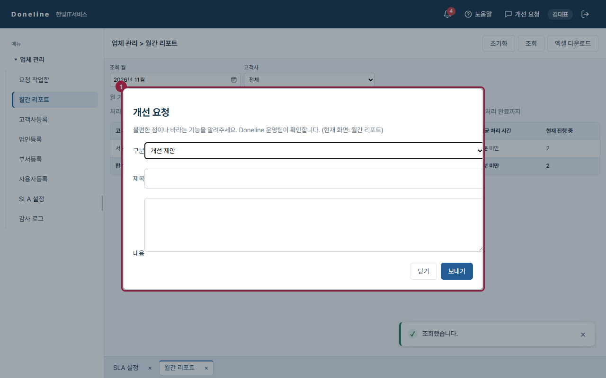